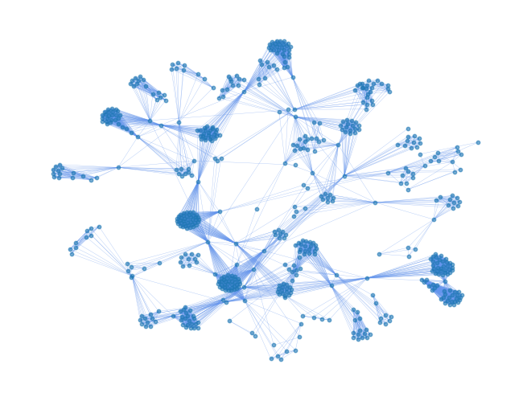

import pandas as pd
import networkx as nx
df = pd.read_table('edo_merchant.tsv', sep='\t', header=0).dropna(subset=['江戸買物ID'])
G_edo = nx.Graph()
place2people = {}
for _, row in df.iterrows():
edo_id = int(row['江戸買物ID'])
person = row['商人名']
place = row['居所（歴史地名体系）']
profession = row['職種']
if True:
place2people.setdefault(place, set())
place2people[place].add(person)
if person not in G_edo.nodes:
G_edo.add_node(person, places=set(), professions=set())
G_edo.nodes[person]['places'].add(place)
G_edo.nodes[person]['professions'].add(profession)
import itertools
for place, people in place2people.items():
for person1, person2 in list(itertools.combinations(people, 2)):
G_edo.add_edge(person1, person2)
G_sub_edo = G_edo.subgraph(max(nx.connected_components(G_edo), key=len))
import matplotlib.pyplot as plt
#plt.figure(2, figsize=(8, 8))
DRAW_CONFIG = {
'node_size': 10,
'font_size': 3,
'with_labels': False,
'width': 0.25,
'alpha': 0.8
}
EDO_DRAW_CONFIG = {
'node_size': 10,
'with_labels': False,
'edge_color': 'cornflowerblue',
'width': 0.25,
'alpha': 0.6,
}
pos = nx.spring_layout(G_sub_edo, iterations=150, seed=1234, k=0.5)
nx.draw(G_sub_edo, pos, **EDO_DRAW_CONFIG)

G_sub_edo.nodes['伊勢屋吉兵衛']
{'places': {'上野新黒門町', '本町三丁目', '神田鍋町', '豊島町一丁目', '通油町'},
'professions': {'下リ傘問屋',
'丸藤問屋',
'乾物類卸',
'唐和薬種問屋',
'紙問屋',
'絵具染草問屋',
'線香問屋',
'諸国銘茶所',
'諸薬調合所薬種問屋'}}
_G_edo = G_sub_edo.copy()
for node in _G_edo.nodes:
del _G_edo.nodes[node]['places']
del _G_edo.nodes[node]['professions']
_G_edo.nodes['伊勢屋吉兵衛']
{}
nx.write_graphml(_G_edo, "edo_merchant.graphml", encoding='utf-8')
__G_edo = nx.read_graphml(path="edo_merchant.graphml")
df[df.商人名.isin(__G_edo.nodes)].value_counts('職種').head(50)
職種
絵具染草問屋 28
水油仲買 27
木綿問屋 24
奥州筋船積問屋 23
線香問屋 22
釘鉄銅物問屋 22
唐和薬種問屋 22
（薬種） 21
醤油酢問屋 18
麻苧問屋 18
下リ傘問屋 17
紙問屋 15
書物問屋 14
小間物問屋 13
鰹節・塩干肴問屋 11
薬種問屋 10
畳表問屋 10
唐和薬種十組問屋 10
丸藤問屋 10
扇問屋 9
足袋股引所 9
糸物問屋 9
塗物問屋 8
繰綿問屋 8
明樽問屋 8
呉服問屋 8
水油問屋 7
鍋釜問屋 7
下り蝋燭問屋 7
諸国銘茶所 7
御伽羅之油 7
煙管問屋 7
煙管おろし 6
地本問屋 6
蝋燭問屋 6
下リ雪踏問屋 6
呉服太物所 6
鼈甲櫛笄所 6
瀬戸物問屋 6
藍玉問屋 5
諸国茶問屋 5
針問屋 5
小間物諸色問屋 5
鼈甲櫛笄問屋 5
真綿問屋 5
小間物卸 5
蝋問屋 5
干鰯魚〆粕魚油問屋 4
（薬種） 弘所 4
錫鉛問屋 4
Name: count, dtype: int64
with open('himono_merchants.tsv', 'w+') as f:
_df = df[df.商人名.isin(__G_edo.nodes)]
for merchant in list(_df[_df.職種 == '鰹節・塩干肴問屋'].商人名):
f.write(merchant + '\n')
_df
| 江戸買物ID | 商人名 | 居所（歴史地名体系） | 江戸マップID | 居所（原本表記） | 職種 | 仲間 | |
|---|---|---|---|---|---|---|---|
| 3 | 1370.0 | 大丸屋正右衛門 | 通旅籠町 | 3-168 | 大傳馬町三通旅籠町 | 呉服物 | NaN |
| 5 | 710.0 | 恵美壽屋太郎左衛門 | 尾張町一丁目元地 | 2-105 | 新橋尾張町 | 呉服太物所 | NaN |
| 6 | 1902.0 | 布袋屋善右衛門 | 尾張町一丁目元地 | 2-105 | 新橋尾張町角 | 呉服太物所 | NaN |
| 12 | 171.0 | 伊勢屋八兵衛 | 麹町七丁目 | 7-015 | 麹町七丁目 | 呉服太物所 | 十組 |
| 19 | 1689.0 | 唐木屋七兵衛 | 本石町二丁目 | 3-145 | 本石町二丁目 | 呉服問屋 | NaN |
| ... | ... | ... | ... | ... | ... | ... | ... |
| 2375 | 1367.0 | 袋屋伊兵衛 | 小伝馬町三丁目 | 3-154 | 小伝馬町三丁目角 | 足袋股引問屋 | NaN |
| 2380 | 302.0 | 越前屋幸助 | 麹町三丁目 | 7-011 | 麹町三丁目大横丁 | 足袋股引所 | NaN |
| 2384 | 1304.0 | 泉屋宗右衛門 | 浅草諏訪町 | 17-200 | 浅草諏訪町 | 足袋股引問屋 | NaN |
| 2388 | 195.0 | 伊勢屋与八 | 大伝馬町一丁目 | 3-166 | 大伝馬町一丁目 | 足袋股引所 | NaN |
| 2389 | 148.0 | 伊勢屋長十郎 | 本湊町 | 2-277 | 鉄砲洲本湊町 | 足袋股引所 | NaN |
804 rows × 7 columns